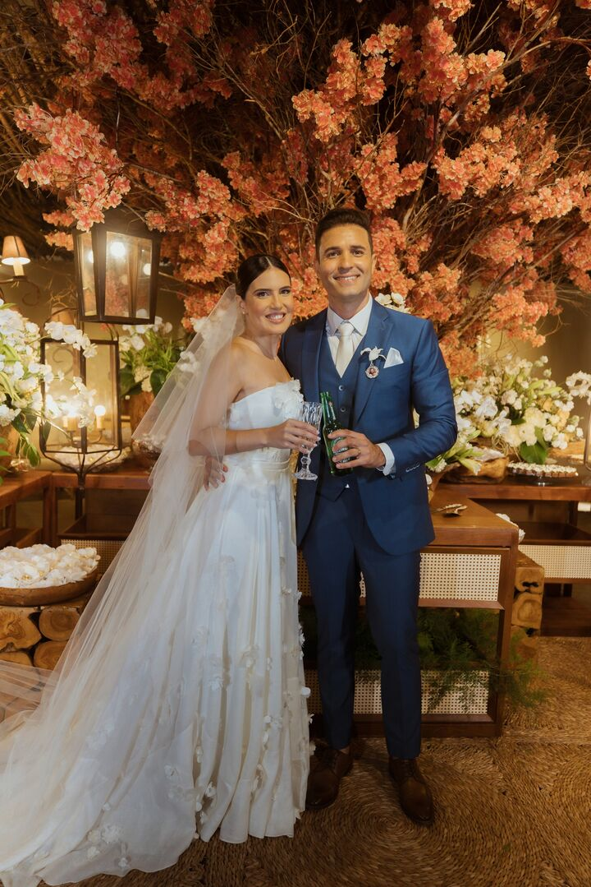
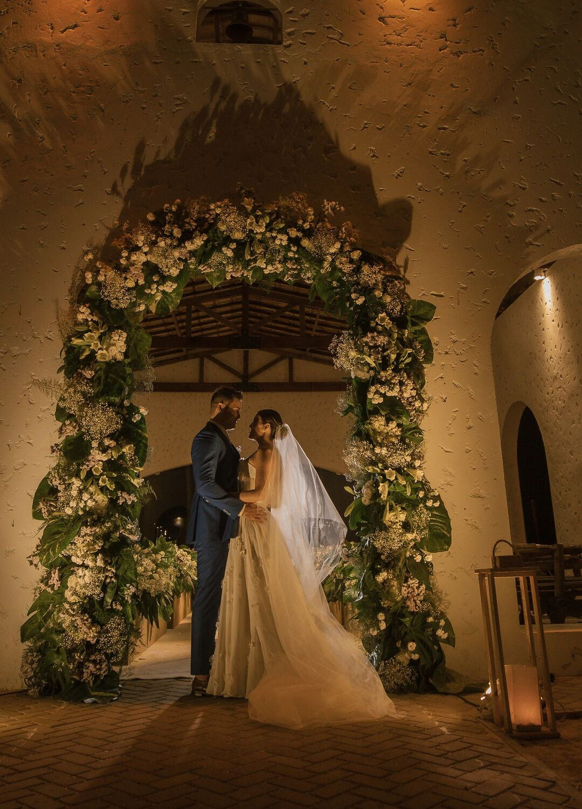

Quem somos
Somos Thalita e Léo Medina.

Narramos casamentos explicando cada escolha. Não é uma vitrine. É uma aula.
Enquanto todos assistem à festa, nós a interpretamos: por que aquela flor, por que aquela luz, por que aquele horário.
Foi assim que noivas — e pessoas que gostam de organizar festas — começaram a nos acompanhar, cobertura após cobertura.
Desta trajetória nasceu o Encontrei o Vestido, o nosso site de vestidos de noiva e de festa seminovos.
Nossos serviços
Cobertura presencial de casamento
Estamos presentes no seu casamento e o narramos como quem ensina: cada escolha explicada, cada fornecedor creditado, diante de uma audiência que organiza o próprio casamento.
“Observe que o bar de drinks foi posicionado estrategicamente logo atrás da pista de dança, garantindo que ninguém precisasse se afastar da música para se servir.”
Cada cobertura é singular: a data, a cidade, a dimensão da celebração. Por isto, cada casal recebe uma proposta redigida para o seu caso.
Consultar a minha dataPublicidade
A sua marca dentro de uma cobertura acompanhada por uma audiência que chega para aprender, e não para passar o tempo.
É assim que um fornecedor é apresentado em uma cobertura nossa:
“A Toda de Branco substitui o ‘padrão do mercado’ por um conceito criado sob medida para o casal.”
A sua marca aparece do mesmo modo: pelo trabalho que realiza, e não apenas pela menção.
Não enviamos um kit de mídia padronizado. Cada marca recebe uma proposta redigida para o próprio caso, com os números do perfil apurados no mês da solicitação.
Solicitar uma propostaTalks e palestras
No palco, Thalita volta o olhar das coberturas para as tendências que chegam aos casamentos, para os erros de planejamento que se repetem e para os detalhes que distinguem uma celebração na memória do convidado.
Em setembro de 2026, ela foi convidada a falar no Talk FF Noivas e Festas, cujo tema foi “Casamentos, tendências e tudo o que está por trás do grande dia”.
Quem convida recebe uma proposta redigida para o evento.
Convidar para um eventoConsultoria para noivas
Uma conversa para que você não incorra nos erros que já presenciamos, do buquê ao horário da cerimônia.
Solicitar uma consultoriaPor que as noivas nos seguem
Mensagens recebidas pelo Instagram, nas palavras de quem as enviou. Apenas as abreviações foram escritas por extenso.
-
“Nunca vi um casamento ser explicado dessa forma, estou apaixonada por esse perfil”
Seguidora · agosto de 2026
-
“Nada é vago, ou falso. São informações verdadeiras, e que fazem diferença! O melhor para noivas”
Seguidora
-
“Alguns detalhes que adicionamos graças às dicas de vocês foram super notados e elogiados. Os guardanapos personalizados ficaram perfeitos”
Noiva · março de 2024
-
“Minha dose diária de estímulo pra continuar organizando tudo de forma impecável”
Seguidora
-
“Muito do meu estilo de noiva e minhas decisões na trajetória de casamento, foi graças a vocês”
Noiva · junho de 2024
-
“Gosto da leveza com que você trata o casamento, porque ele me deixa de cabelo em pé”
Seguidora
-
“Conteúdo maravilhoso, Thalita atenciosa, parece que te conheço pessoalmente. Adoro essa página”
Seguidora
-
“Sua proximidade com os seguidores e sua sinceridade/
transparência” Seguidora
Coberturas que as noivas guardam para o próprio casamento
- Malu & João Casamento · presencial · setembro de 2026
- Fabiana Justus Renovação de votos · agosto de 2026
- Walmy Becho Aniversário de 50 anos · presencial · julho de 2026
- Marcelo & Nalberto Casamento · presencial · junho de 2026
- Elisa & Alexandre Casamento · junho de 2026
- Marta & Carrie Casamento · janeiro de 2026
- Mari Krüger Casamento · novembro de 2025
- Fran & Tony Casamento · outubro de 2025
Perguntas frequentes
Vocês realizam coberturas fora de Maceió?
Sim. A nossa primeira cobertura presencial, em junho de 2026, ocorreu em Brasília. O custo do deslocamento é calculado para a sua cidade e informado na proposta, antes da contratação.
O que a cobertura não inclui?
Fotografia e filmagem. Estas permanecem a cargo do fotógrafo e do videomaker que você contratar; nós os creditamos em um story próprio e explicamos o trabalho de cada um ao longo da cobertura.
Onde e quando a cobertura é publicada?
É publicada nos stories do @os_medinas e, em seguida, reunida em um destaque no perfil, para que quem não acompanhou possa vê-la com calma. O calendário de publicação consta da proposta.

